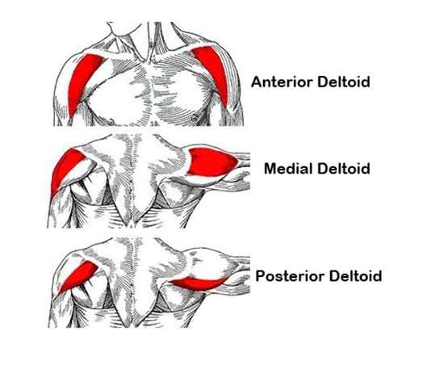
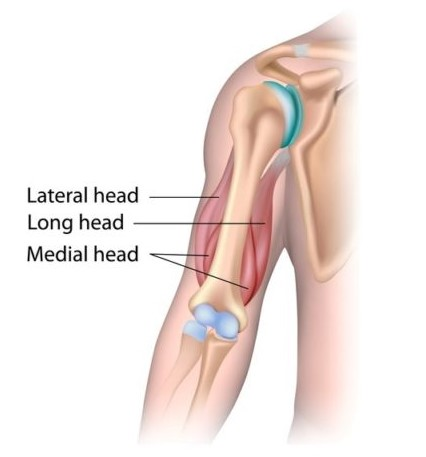
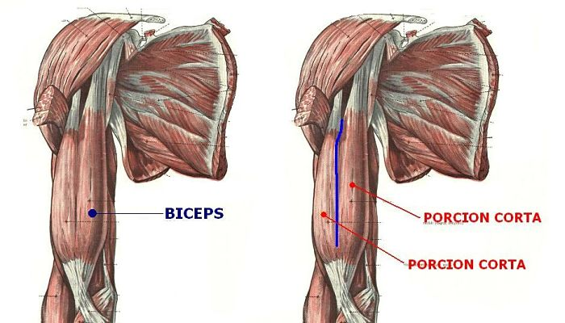
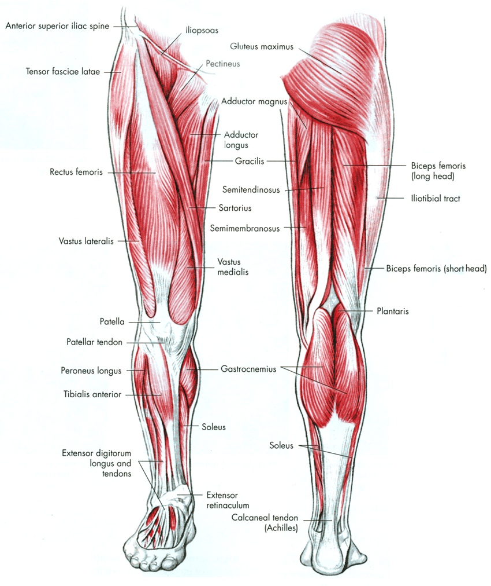

Dobre vyvinuté ramená sú základom pre vyváženú a symetrickú V-postavu, o ktorú všetci vo fitness centre usilujeme. Najväčšou chybou, ktorú cvičenci robia je, že zanedbávajú precvičenie všetkých 3 hláv deltového svalu: Anterior Deltoid, Median Deltoid a Posterior Deltoid"
Predný deltoid je je predná časť ramenného svalu. Jeho úlohou je odťahovanie, ak je ruka externe rotovaná, ohýbanie ruky v ramene a vnútorné otočenie ramena.
Nazývame ho aj laterálny sval ramena. Je to stredný sval nášho ramena a jeho funkciou je pohyb ramena nahor, keď je vnútorne rotované.
Jeho funkciou je extenzia paže, hlavne v pohybe vzad a zabezpečuje vonkajšiu rotáciu. Zadné delty spolu s laterálnymi dotvárajú 3D vzhľad našich ramien a ich rozvoj je dôležitý pre celkové zdravie ramenného kĺbu.
Triceps, čiže trojhlavý sval paže (latinsky musculus triceps brachii), tvorí väčšinu svalovej hmoty hornej končatiny. Vytvára totiž väčšiu časť nadlaktia a približne dve tretiny paže. Všetky tri hlavy svalu sa upínajú z jednej strany na horný koniec lakťovej kosti. Zo strany druhej sa však každá časť upína na iné miesto.
Z hľadiska funkcie je úlohou tricepsu vystieranie ruky a pomáha tiež udržať lakťový kĺb v pevnej pozícii. Vplyv má tiež na ramenný kĺb, pričom pomáha pri priťahovaní rúk k telu. Triceps je tiež antagonista dvojhlavého svalu, čiže bicepsu, čo znamená, že pôsobí presne naopak -- biceps je ohýbačom lakťového kĺbu.
Neviem ako vy, ale ja som bol v šoku z toho, že „kocky“ sú vlastne jeden sval. Vždy som si myslel, že sú to osobitné svaly, ktoré spolu spolupracujú a navzájom sa dopĺňajú. Zistenie, že je to v postate jeden sval, ktorý je prekrývaný väzmi a tým sa vytvárajú kocky, ma fakt prekvapilo.
Šikmý brušný sval je z jeden strany uchytený na rebrách, ale zároveň aj na panve. Na druhej strane nie je sval uchytený o pevnú časť tela, ale pripája sa ku svalu priamemu.
Pílovitý sval je tvorený z viacerých svalov. Tieto jednotlivé svaly sú z jedenej strany uchytené na rebre (každý sval je uchytený pomocou šľachy o jedno rebro, čiže každý sval ma „svoje“ rebro, o ktoré je uchytený) a na druhej strane je uchytený na lopatke, respektíve zospodu na lopatke.
Svaly hrudníka môžeme viacnásobne deliť. Ako prvé a základné rozdelenie svalov hrudníka môžeme uviesť podľa nasledovných svalov:
Veľký prsný sval sa skladá z veľkého počtu zväzkov svalových vlákien. Vo všeobecnosti sa rozdeľuje nasledovne:
Malý prsný sval sa nachádza pod veľkým prsným svalom. Pre jeho veľkosť nie je ďalej delený. Môžeme povedať, že okrem toho, že napomáha veľkému prsnému svalu, stabilizuje kosť kľúčnu v jamke ramenného kĺbu.
Biceps (biceps brachii) je sval, ktorý sa nachádza na prednej strane ramennej kosti. je teda antagonistom tricepsu, s ktorým tvorí svalstvo paže. Ide o sval zložený z dvoch hláv – dlhej (caput longum) a krátkej (caput breve). Spolu pracujú v synergii ako jeden sval.
Obe hlavy sa tiahnu od ramena po predlaktie, ale upínajú sa na odlišných miestach. Dlhá hlava sa hore upína na lopatke blízko ramenného kĺbu a dole na vretennú kosť. Krátka hlava sa hore takisto upína na lopatku, ale dole na lakťovú kosť.
Vďaka tomu, že je biceps upnutý na oboch kostiach predlaktia, dokáže okrem priťahovania predlaktia k ramennej kosti zabezpečiť aj vytáčanie predlaktia oboma smermi. Pomáha fixovať predlaktie a jemne asistuje aj pri predpažovaní či pripažovaní. Krátka hlava stabilizuje ramenný kĺb, keď v ruke nesieme ťažkú záťaž.
Poznáme tri základné skupiny svalov dolných končatín: Predné, Zadné a Stredné
Svaly, ktoré by ste ale istotne mali poznať a venovať im počas tréningu svoj čas sú tieto: štvorhlavý sval stehenný (kvadriceps), hamstring (dvojhlavý sval stehenný, poloblanitý sval a pološlachovitý sval), dlhý priťahovač (adductor), krátky priťahovač (abductor), veľký sedací sval a ženy by mali venovať špeciálnu pozornosť strednému sedaciemu svalu (vysvetlíme si prečo), no a samozrejme by bola naozaj veľká chyba neprecvičovať svaly lýtok.